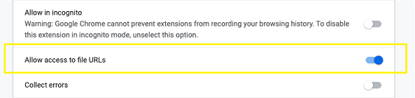
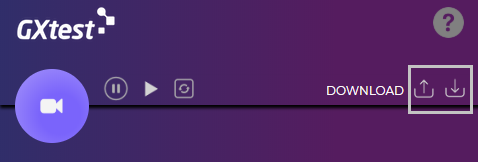
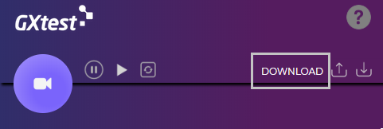

Recording UI Tests
GXtest Recorder is a Chrome extension designed to facilitate the recording, editing and playback of UI tests using GXtest.
Installation
GXtest Recorder can be downloaded from the Chrome Web Store.

Installation notes
The extension needs to have local file access permission in order to execute file-related commands. To enable this permission, please go to the extension details page (chrome://extensions/?id=edbiefalppkhegcephbbcojpibobbdbd) and enable the option "Allow access to file URLs"

Basic usage
Once you start navigating on the recorder tab, GXtest Recorder will be capturing and adding different commands to your recording.
To start recording, simply press the record/stop button, it should turn red to indicate the recording has started.

After that, just return to your browsing window and the recorder will record your actions. Once you are done the workflow, press the record/stop button to stop the recording.
Add assertions
During the recording, you can always add test validations (like checking some control's text or value) by using the Chrome context menu by right-clicking elements on the web page.

Editing recording
After recording, you can always modify the flow of your tests using the recorder. To open the command action menu, right-click on any command.

Add command
To add a command, select ‘Add command’ in the command action menu. Note the command will be added after the current selected one.
Edit command
To edit any command, left-click it and updates its values in the command editor below.

The target and value fields type or requirement will be dependent on the command selected.
In case the command accepts a selector as a target, you can use the ‘Select’ button and selecting the element on the web page, to get its selectors automatically.
The find button will highlight the current target element on the webpage.
Delete command
To delete a command, click ‘Delete command’ on the command action menu.
Reorder commands
To update a command order you can click and drag the command to the selected position.

Commands table
In this table you can find the supported commands by GXtest Recorder.
|
Command |
Mode |
Target |
Value |
|
AnswerOnNextPrompt |
Auto |
The string to be set on the next prompt pop-up |
- |
| AssertAlertText | Manual | The expected alert message | - |
| AssertConfirmation | Manual | The expected confirmation message | - |
| AssertPrompt | Auto | The expected prompt message | - |
| AssertTextBy | Manual | A locator | The expected text of the target element (Exact matching) |
| AssertTitle | Manual | The expected string of the title (Exact matching) | |
| AssertValueBy | Manual | A locator | The expected value of the target element (Exact matching) |
| ChooseCancelOnNextConfirmation | Auto | - | - |
| ChooseCancelOnNextPrompt | Auto | - | - |
| ChooseOkOnNextConfirmation | Auto | - | - |
| ClickBy | Auto | A locator |
x,y position of the mouse event relative to the target element. For example: 10,10. Left blank means a simple click. |
| CloseWindow | Auto | Autogenerated | - |
| DoubleClickBy | Auto | A locator | x,y position of the mouse event relative to the target element. For example: 10,10. Left blank means a simple double click. |
| Echo | Manual | The string to be printed in the log tab. Variables declared in Store commands or Variable tab can be used in the string. | - |
| EditContentBy | Auto | A locator | The string to be set to the content of the target element with attribute contenteditable="true" |
| FileUploadBy | Manual | A locator | The path of the file to upload |
| GetTextBy | Manual | A locator | The name of the variable storing the text of the target element. |
| GetTitle | Manual | The title to store | The name of the variable storing the title. |
| GetValueBy | Manual | A locator | The name of the variable storing the value of the target element. |
| Go | Auto | A URL | - |
| KeysBy | Auto | A locator | A string or special keystroke, e.g. ${KEY_DOWN} |
| MouseMoveBy | Auto | A locator | A JSON string containing a list of movements. e.g. {"Movements" : [{"TD": 8, "OX":1, "OY":2}]}. TD is time delay between movements, OX and OY are offset to the previous movement. Must be used or command fails, if no further movements are intended just use {"Movements":[]} |
| PauseFor | Manual | - | The amount of time to sleep in milliseconds. e.g. 5000 means sleep for 5 seconds |
| RunScript | Manual | A javascript expression to be ran. e.g var a=10; var b=20; console.log(a+b) |
The amount of time to wait before timeout is thrown in milliseconds. -1 for infinite wait |
| SelectBy | Auto | A locator of a dropdown menu | An option locator. e.g. label=option1 |
| SubmitBy | Auto | The locator of the form to submit | - |
| SwitchFrame | Auto |
index=0 (Select the first frame of index 0), or relative=parent (Select the parent frame), or relative=top (Select the top frame) |
- |
| SwitchWindow | Auto | Autogenerated | - |
| TypeBy | Auto | A locator | The string to be set to target element |
Auto: Automatically captured by user input when recording
Manual: Not recorded automatically, should be added manually after recording.
Context menu: Manual mode and located on the context menu
(*) The command FileUploadBy requires extra permission to be able to access the files to upload. Check the installation notes to enable this permission.
Playback
This is the first action that you usually want to take in order to validate that the sequence of commands recorded is doing what you want.
If you want to debug the recording, a breakpoint can be added by clicking ‘Toggle breakpoint’ in the desired command action menu.

Log
Each playback will generate a log containing detailed information about the run with the option to be saved.
Save/open recording
It is possible to backup or loads previous recordings. You can save your recording by clicking the save button, to later open it by clicking
.

Exporting to GXtest
To bring the UI test to GeneXus IDE, transforming the recording into a KB test object. To create UI Test inside GeneXus IDE, download the test case using GeneXus code just click the ‘DOWNLOAD’ button. A file containing the exported test will be downloaded, ready to be loaded in the GeneXus IDE.

Known limitations
Due to technical limitations, the recording of autocomplete fields is currently not supported. In case you need to record the action on an autocomplete field, it is advisable to first empty the field and then do the action.